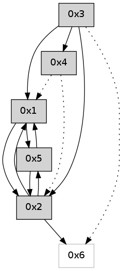

>> << IDX [start] -100 -25 -5 +0 +5 +25 +100 [430.252171993]
 Previous packets
----------------------------------------------------------------------
425.331091 beacon01(adaf) #0 coord=01,02,05,03,04,06 cycle=432.0ms assoc
-- color-indic=0 64 a1 9d
425.341052 beacon02(adaf) #0 coord=01,02,05,03,04,06 cycle=432.0ms assoc 64 f0 62
425.351052 beacon05(adaf) #0 coord=01,02,05,03,04,06 cycle=432.0ms assoc 64 56 48
425.361052 beacon03(adaf) #0 coord=01,02,05,03,04,06 cycle=432.0ms assoc 64 ca 6c
425.371052 beacon04(adaf) #0 coord=01,02,05,03,04,06 cycle=432.0ms assoc 64 6c 46
425.381053 beacon06(adaf) #0 coord=01,02,05,03,04,06 cycle=432.0ms assoc 64 18 5a
425.391840 [Hello(1): seq=122 sym=5,2 sysInfo= stat=5:12,0,0,0/2:2,0,0,0]
----------------------------------------------------------------------
425.823199 beacon01(adaf) #0 coord=01,02,05,03,04,06 cycle=432.0ms assoc
-- color-indic=0 64 65 f2
425.843160 beacon05(adaf) #0 coord=01,02,05,03,04,06 cycle=432.0ms assoc 64 92 27
425.873160 beacon06(adaf) #0 coord=01,02,05,03,04,06 cycle=432.0ms assoc 64 dc 35
425.884808 [Hello(5): seq=185 sym=2,1 sysInfo= stat=2:12,0,0,0/1:0,0,0,0]
----------------------------------------------------------------------
426.315307 beacon01(adaf) #0 coord=01,02,05,03,04,06 cycle=432.0ms assoc
-- color-indic=0 64 29 42
426.325267 beacon02(adaf) #0 coord=01,02,05,03,04,06 cycle=432.0ms assoc 64 78 bd
426.335268 beacon05(adaf) #0 coord=01,02,05,03,04,06 cycle=432.0ms assoc 64 de 97
426.345268 beacon03(adaf) #0 coord=01,02,05,03,04,06 cycle=432.0ms assoc 64 42 b3
426.355268 beacon04(adaf) #0 coord=01,02,05,03,04,06 cycle=432.0ms assoc 64 e4 99
426.365271 beacon06(adaf) #0 coord=01,02,05,03,04,06 cycle=432.0ms assoc 64 90 85
426.376905 [Hello(4): seq=224 asym=1 sysInfo= stat=1:9,0,0,0]
426.380015 [Hello(1): seq=123 sym=5,2 sysInfo= stat=5:13,0,0,0/2:2,0,0,0]
----------------------------------------------------------------------
426.807416 beacon01(adaf) #0 coord=01,02,05,03,04,06 cycle=432.0ms assoc
-- color-indic=0 64 ed 2d
426.817378 beacon02(adaf) #0 coord=01,02,05,03,04,06 cycle=432.0ms assoc 64 bc d2
426.827378 beacon05(adaf) #0 coord=01,02,05,03,04,06 cycle=432.0ms assoc 64 1a f8
426.837377 beacon03(adaf) #0 coord=01,02,05,03,04,06 cycle=432.0ms assoc 64 86 dc
426.847378 beacon04(adaf) #0 coord=01,02,05,03,04,06 cycle=432.0ms assoc 64 20 f6
426.857378 beacon06(adaf) #0 coord=01,02,05,03,04,06 cycle=432.0ms assoc 64 54 ea
426.869070 [Hello(2): seq=721 sym=5,1 asym=6 sysInfo= stat=5:12,0,0,0/1:13,0,0,0/6:0,0,0,0]
----------------------------------------------------------------------
427.299525 beacon01(adaf) #0 coord=01,02,05,03,04,06 cycle=432.0ms assoc
-- color-indic=0 64 63 38
427.309485 beacon02(adaf) #0 coord=01,02,05,03,04,06 cycle=432.0ms assoc 64 32 c7
427.319485 beacon05(adaf) #0 coord=01,02,05,03,04,06 cycle=432.0ms assoc 64 94 ed
427.329486 beacon03(adaf) #0 coord=01,02,05,03,04,06 cycle=432.0ms assoc 64 08 c9
427.339486 beacon04(adaf) #0 coord=01,02,05,03,04,06 cycle=432.0ms assoc 64 ae e3
427.349487 beacon06(adaf) #0 coord=01,02,05,03,04,06 cycle=432.0ms assoc 64 da ff
427.361158 [Hello(4): seq=225 asym=2,1 sysInfo= stat=2:0,0,0,0/1:10,0,0,0]
427.362921 [Hello(1): seq=124 sym=5,2 sysInfo= stat=5:13,0,0,0/2:3,0,0,0]
----------------------------------------------------------------------
427.791632 beacon01(adaf) #0 coord=01,02,05,03,04,06 cycle=432.0ms assoc
-- color-indic=0 64 a7 57
427.801593 beacon02(adaf) #0 coord=01,02,05,03,04,06 cycle=432.0ms assoc 64 f6 a8
427.811593 beacon05(adaf) #0 coord=01,02,05,03,04,06 cycle=432.0ms assoc 64 50 82
427.821593 beacon03(adaf) #0 coord=01,02,05,03,04,06 cycle=432.0ms assoc 64 cc a6
427.831593 beacon04(adaf) #0 coord=01,02,05,03,04,06 cycle=432.0ms assoc 64 6a 8c
427.841595 beacon06(adaf) #0 coord=01,02,05,03,04,06 cycle=432.0ms assoc 64 1e 90
427.853293 [Hello(2): seq=722 sym=5,1 asym=6 sysInfo= stat=5:12,0,0,0/1:14,0,0,0/6:0,0,0,0]
----------------------------------------------------------------------
428.283740 beacon01(adaf) #0 coord=01,02,05,03,04,06 cycle=432.0ms assoc
-- color-indic=0 64 eb e7
428.293700 beacon02(adaf) #0 coord=01,02,05,03,04,06 cycle=432.0ms assoc 64 ba 18
428.303700 beacon05(adaf) #0 coord=01,02,05,03,04,06 cycle=432.0ms assoc 64 1c 32
428.313700 beacon03(adaf) #0 coord=01,02,05,03,04,06 cycle=432.0ms assoc 64 80 16
428.323701 beacon04(adaf) #0 coord=01,02,05,03,04,06 cycle=432.0ms assoc 64 26 3c
428.333702 beacon06(adaf) #0 coord=01,02,05,03,04,06 cycle=432.0ms assoc 64 52 20
428.345364 [Hello(4): seq=226 asym=2,1 sysInfo= stat=2:1,0,0,0/1:11,0,0,0]
428.348764 [Hello(1): seq=125 sym=5,2 sysInfo= stat=5:13,0,0,0/2:4,0,0,0]
----------------------------------------------------------------------
428.775847 beacon01(adaf) #0 coord=01,02,05,03,04,06 cycle=432.0ms assoc
-- color-indic=0 64 2f 88
428.785808 beacon02(adaf) #0 coord=01,02,05,03,04,06 cycle=432.0ms assoc 64 7e 77
428.795807 beacon05(adaf) #0 coord=01,02,05,03,04,06 cycle=432.0ms assoc 64 d8 5d
428.805809 beacon03(adaf) #0 coord=01,02,05,03,04,06 cycle=432.0ms assoc 64 44 79
428.815809 beacon04(adaf) #0 coord=01,02,05,03,04,06 cycle=432.0ms assoc 64 e2 53
428.825809 beacon06(adaf) #0 coord=01,02,05,03,04,06 cycle=432.0ms assoc 64 96 4f
428.837507 [Hello(2): seq=723 sym=5,1 asym=6 sysInfo= stat=5:12,0,0,0/1:15,0,0,0/6:0,0,0,0]
----------------------------------------------------------------------
429.267955 beacon01(adaf) #0 coord=01,02,05,03,04,06 cycle=432.0ms assoc
-- color-indic=0 64 62 8f
429.277917 beacon02(adaf) #0 coord=01,02,05,03,04,06 cycle=432.0ms assoc 64 33 70
429.287916 beacon05(adaf) #0 coord=01,02,05,03,04,06 cycle=432.0ms assoc 64 95 5a
429.297916 beacon03(adaf) #0 coord=01,02,05,03,04,06 cycle=432.0ms assoc 64 09 7e
429.307915 beacon04(adaf) #0 coord=01,02,05,03,04,06 cycle=432.0ms assoc 64 af 54
429.317918 beacon06(adaf) #0 coord=01,02,05,03,04,06 cycle=432.0ms assoc 64 db 48
429.329566 [Hello(4): seq=227 asym=2,1 sysInfo= stat=2:2,0,0,0/1:12,0,0,0]
429.331699 [Hello(1): seq=126 sym=5,2 sysInfo= stat=5:13,0,0,0/2:5,0,0,0]
----------------------------------------------------------------------
429.760062 beacon01(adaf) #0 coord=01,02,05,03,04,06 cycle=432.0ms assoc
-- color-indic=0 64 a6 e0
429.770024 beacon02(adaf) #0 coord=01,02,05,03,04,06 cycle=432.0ms assoc 64 f7 1f
429.780023 beacon05(adaf) #0 coord=01,02,05,03,04,06 cycle=432.0ms assoc 64 51 35
429.790023 beacon03(adaf) #0 coord=01,02,05,03,04,06 cycle=432.0ms assoc 64 cd 11
429.800024 beacon04(adaf) #0 coord=01,02,05,03,04,06 cycle=432.0ms assoc 64 6b 3b
429.810026 beacon06(adaf) #0 coord=01,02,05,03,04,06 cycle=432.0ms assoc 64 1f 27
429.821706 [Hello(2): seq=724 sym=5,6,1 sysInfo= stat=5:12,0,0,0/6:1,0,0,0/1:0,0,0,0]